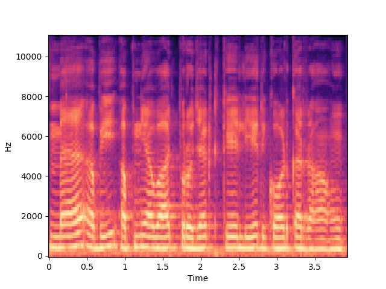
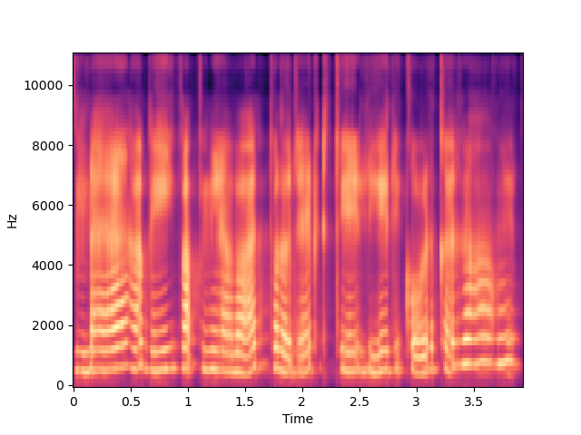

Abstract
Autoencoder can learn to model the hidden speech structure in an unsupervised manner and provide a method to perform non parallel voice conversion. In this paper we implemented a method to perform single shot VC using VGGish inspired Variational Autoencoder. To perform the voice conversion we used instance normalization (IN) to separate the speaker and content representations. Objective evaluations show that our method is able to synthesize a voice similar to the target speaker. Our model was able to perform one-shot many to many voice conversions with less artifacts.
Melspectrogram Visualization
We conducted experiments on melspectrograms feature and realized that the speaker embedding has significant impact to melspectrograms. So to transfer the style of one person to another during the decoding the phase the global style information of the target speaker is used(the skip connections).As it can be seen in the spectrograms the content or the shape of the spectrogram of the target is similar to that of source but in target there are some frequencies which were not present in the source.
| Original utterance (Male) | Converted utterance (Female) |
|---|---|
|  |  |
Male → Female
| Source | Target | VAIN-VC | ADAIN-VC | |
|---|---|---|---|---|
| sample 1 |
Female → Male
| Source | Target | VAIN-VC | ADAIN-VC | |
|---|---|---|---|---|
| sample 1 |
Female → Female
| Source | Target | VAIN-VC | ADAIN-VC | |
|---|---|---|---|---|
| sample 1 |
Male → Male
| Source | Target | VAIN-VC | ADAIN-VC | |
|---|---|---|---|---|
| sample 1 |